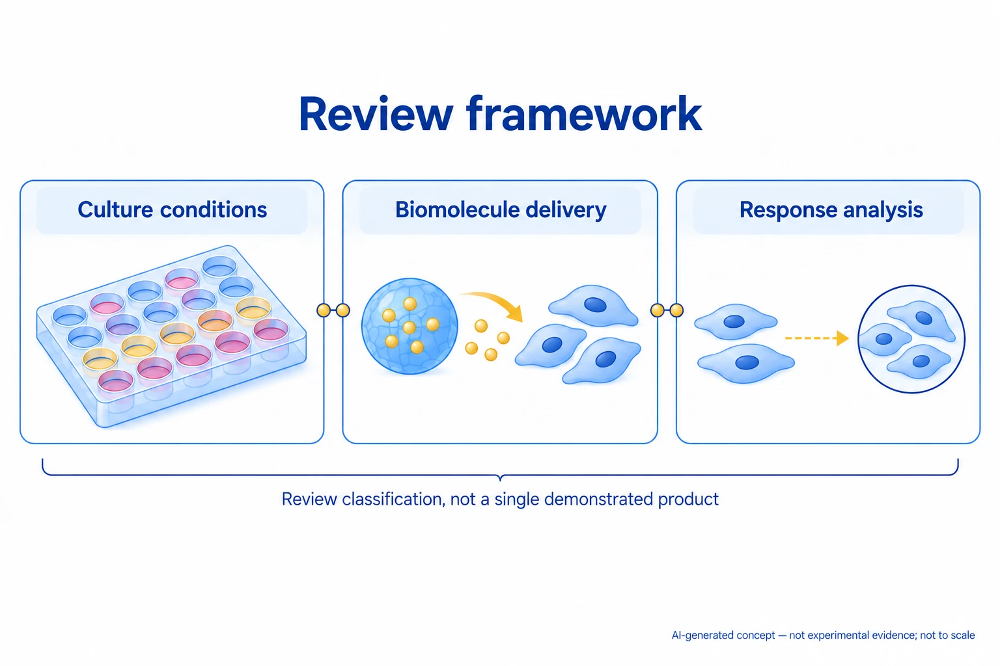

이 연구가 다루는 문제
다양한 배양 조건에서 세포의 반응을 빠르게 비교하는 고속 스크리닝 방법을 정리한 종설입니다. 세포–재료 환경, 생체분자 전달, 세포가 분비한 물질의 분석을 연결해 실험 조건과 측정 방법을 살핍니다.
연구 내용과 주요 결과
세포–재료 환경, 생체분자 전달, 세포 분비물 분석의 고속 스크리닝을 함께 정리한 리뷰입니다.
배양 조건 조합부터 반응 판독까지 통합해서 볼 틀을 제공합니다.

AI로 만든 비축척 개념도입니다. 고속 세포 스크리닝에서 배양 조건, 생체분자 전달과 세포 반응 분석이 맡는 역할을 보여 줍니다.
실제 통합 장치나 자동화 제품, 실험 과정·결과를 재현하지 않습니다. 세포·입자 수, 색, 화살표와 간격은 측정량·조성·시간·성능을 뜻하지 않습니다.
논문 원그림을 복제한 이미지가 아니며, 원그림 재사용 허가를 의미하지 않습니다.
더 확인할 점
리뷰는 여러 조건을 함께 검증하는 방법과 배양 플랫폼을 분석 플랫폼에 연결하는 방법을 과제로 제시합니다.
비교할 때 살펴볼 조건
2차원·3차원 배양 환경, 세포 출처, 생체분자, 판독 지표와 실제 분석 시간을 구분해야 합니다.
함께 읽을 연구
Nanoliter-scale synthesis of arrayed biomaterials and application to human embryonic stem cells
나노리터 재료 배열을 이용해 인간 배아줄기세포와 재료의 상호작용을 병렬로 검사한 선행 연구입니다.
이 연결은 PubMed 초록에 근거합니다. 단일 배열 실험의 처리량을 2차원·3차원 배양과 세포 분비물 분석 전체를 다룬 리뷰와 직접 비교할 수는 없습니다.
초록을 참고한 소개해설에 사용한 자료
이 해설은 논문 본문과 원그림을 참고합니다. 보충자료와 원자료의 별도 검토는 완료하지 않았습니다. 검토 논문에 인용된 개별 연구의 전문을 모두 읽은 것은 아닙니다.